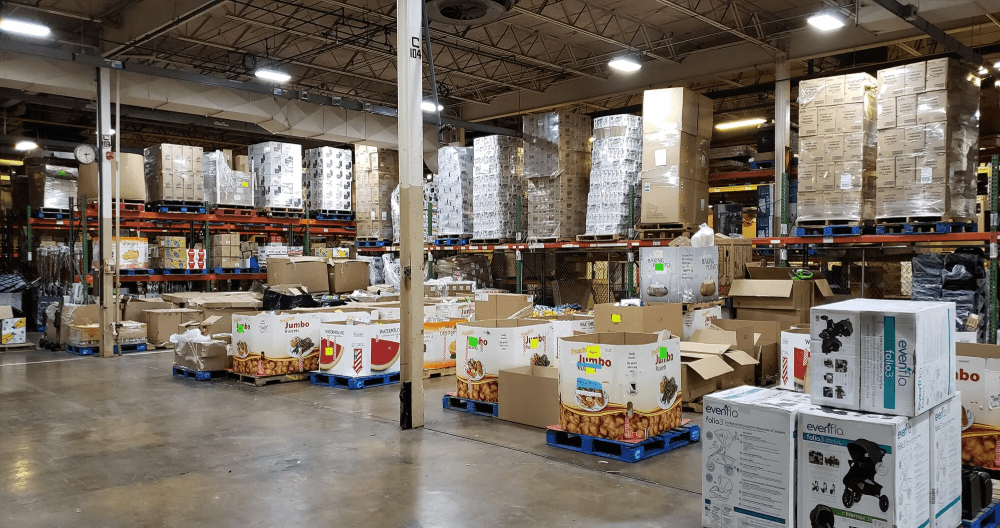
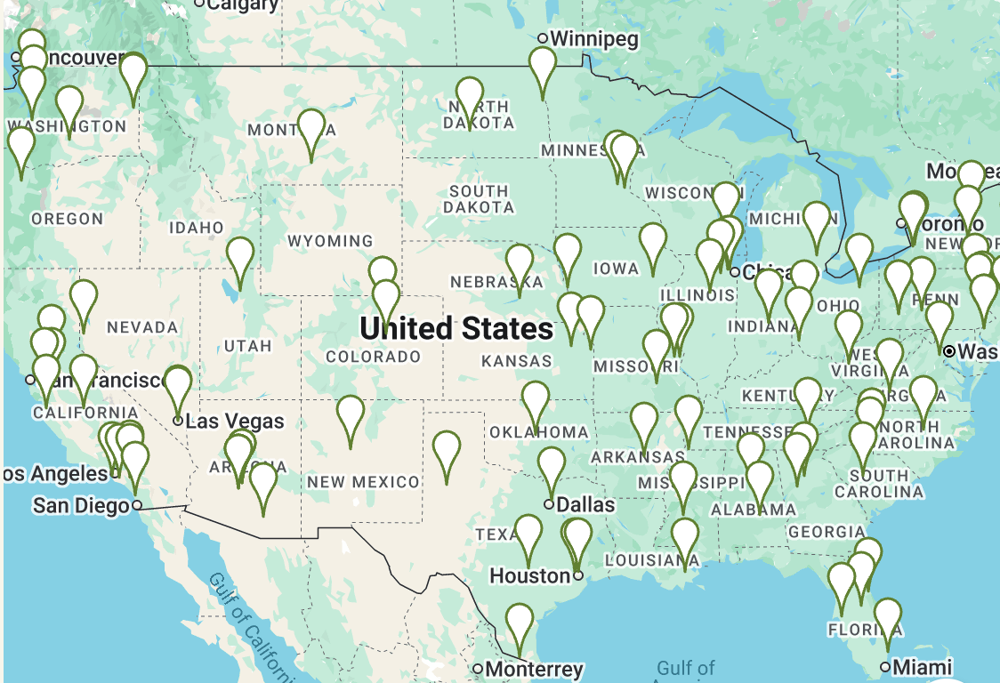
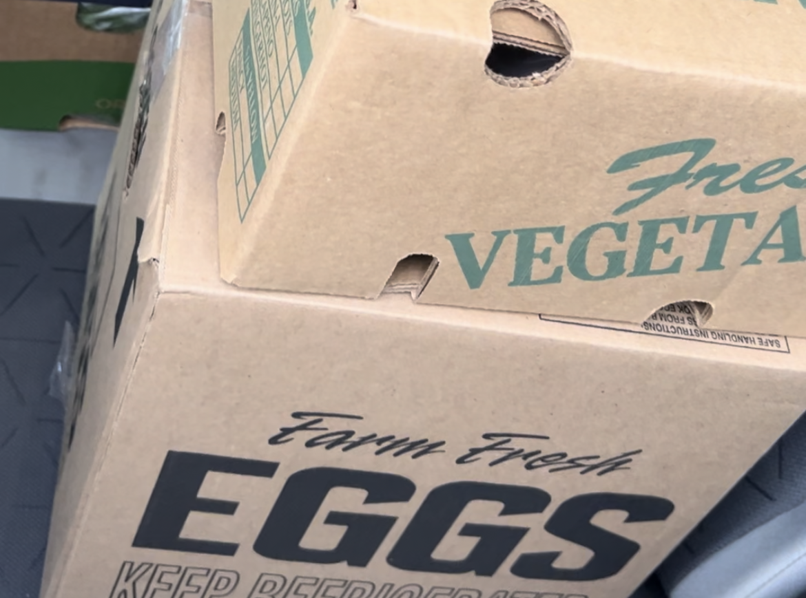
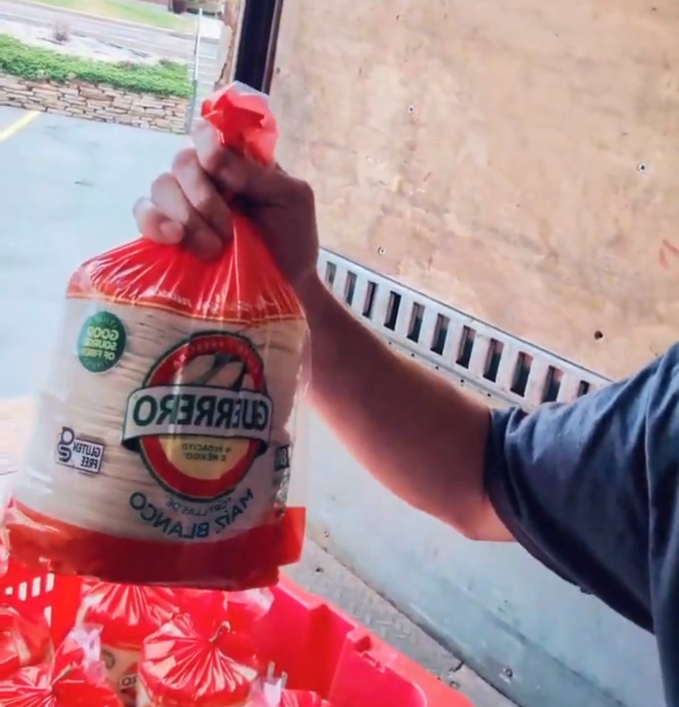
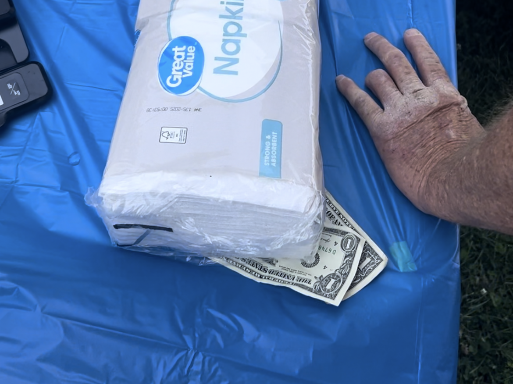
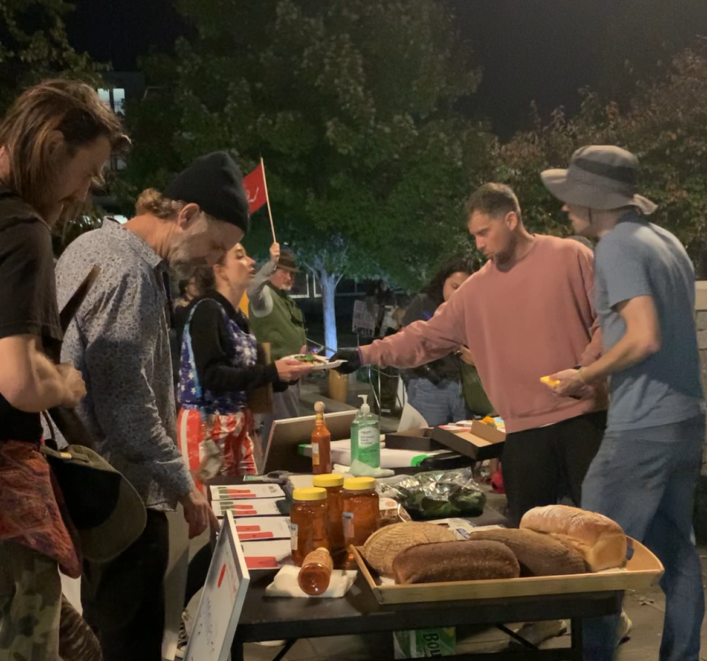
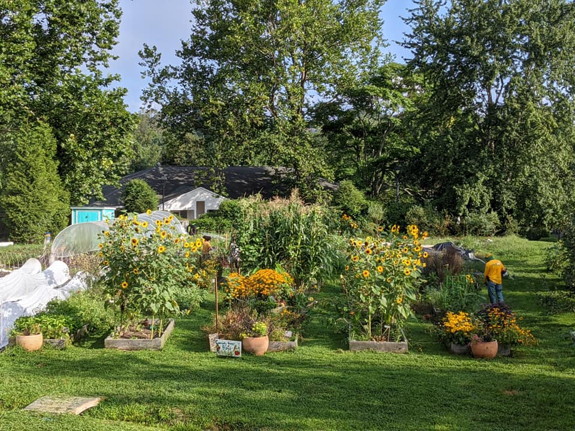

The single biggest logistical challenge of a sustained strike or protest isn't signs, permits, or schedules — it's keeping people fed. When your supporters are hungry, they go home. This guide shows you, step by step, how to source food at wholesale prices so that every dollar donated feeds 3 to 5 times more people than buying from a regular grocery store. We built this system at Commonwealth Grocers, and now we're showing you how to replicate it yourself.
Find Your Local Food Wholesalers
The first and most impactful thing you can do is stop buying food at retail prices. Grocery stores add massive markups to cover their rent, labor, food waste, lighting, and profit margins. By going directly to the suppliers that stock those stores, you cut your costs by 30-60%.
🚛 Start with Distributors, Not Individual Farms
Your first instinct might be to reach out to dozens of individual farms and food producers. Resist that urge — at least at first. Instead, find one or two food distributors who source from many farms and suppliers on your behalf.
Here's why this matters:
- Less coordination: Instead of juggling relationships with 15 farmers, you place one order with one distributor who handles all of that
- More availability: Distributors aggregate supply from many sources, so they're less likely to run out of any single item
- Still well below retail: While distributor prices are slightly higher than direct-from-farm prices, they are still dramatically cheaper than grocery stores
- Delivery included: Most distributors run delivery routes and will bring food to your area at least once a week, often at no extra charge if you hit a minimum order

How to Find Distributors in Your Area
- Google "[your city] restaurant food supplier" or "[your region] food distributor wholesale"
- Ask local restaurant owners who they buy from — most are happy to share
- Check your state's Department of Agriculture website for licensed food distributors
- Search the USDA's Local Food Directories
- Call and ask directly: "We're a community organization looking to buy produce, dairy, and protein in bulk. Can we set up a wholesale account? What are your minimums and delivery schedules?"
🏪 Backup Plan: US Foods Chef Store
If you are anywhere in the USA near a US Foods Chef Store (formerly Cash & Carry), you have a powerful backup option. These are restaurant supply stores open to the public that provide food at steeply discounted rates.

We sometimes sourced chicken at ~$1.28/lb when buying in increments of 40 pounds. At a regular grocery store, comparable chicken runs $3.49-$4.99/lb. That's 63-74% savings on your protein alone.
Employees at these stores sometimes have discretion to offer additional discounts, especially for community organizations buying in volume. It never hurts to ask and explain your mission.
🌾 Build Your Network of Favorite Food Suppliers
Once you've established your primary distributor relationship, expand your network to get the best prices on specific products:
🚜 Visit Local Farms
Drive out to farms in your region. Introduce yourself and your cause. Many farmers will offer steep discounts for bulk orders, especially for produce that is cosmetically imperfect but perfectly edible. Ask about "seconds" — the slightly ugly produce that supermarkets reject but that tastes identical.
🚚 Talk to Delivery Drivers
Stand outside of grocery stores and watch for the big box trucks. Talk to the drivers and delivery reps. Ask: "Can I place a direct order and meet you on your route?" Be exactly on time when you meet them. Sweeten the deal with a tip. Now you have access to the same products the store sells — minus the store's markup.


Farmers and vendors prefer consistent contracts — they want to know you'll keep buying. Your movement may not be able to guarantee that. Be upfront about this. On the other hand, they want your money, especially if they have surplus supply. Frame it as: "We may not buy every week forever, but we're buying a lot right now and we'd like to start a relationship."
💡 More Creative Ways to Source Cheap Food
- Grocery store "rescue" programs: Many stores (Trader Joe's, Whole Foods, Panera) have programs to donate or discount food nearing its sell-by date. Contact store managers directly and ask about their food donation or markdown process.
- Food bank partnerships: Local food banks often have surplus they can share with organized community groups. Contact Feeding America to find yours.
- Gleaning organizations: These groups harvest produce that farmers can't sell commercially. Search for "[your area] gleaning" to find one, or start your own by asking farmers if you can pick what's left after harvest.
- Restaurant end-of-night surplus: Build relationships with local restaurants. Many have food left over at closing time that they'd rather give to your cause than throw away.
- Community food swaps: Organize a swap where supporters bring whatever they have extra of (garden tomatoes, bulk rice from Costco, etc.) and trade with each other.
- Ethnic grocery stores and international markets: These often have significantly lower prices on staples like rice, beans, lentils, spices, and produce than mainstream grocery chains.
- Buy "ugly" produce: Services like Imperfect Foods or direct relationships with farms for cosmetically imperfect produce can save 30-50%.
- Bulk dry goods co-ops: Pool money with other organizations to buy 50-lb bags of rice, beans, flour, and oats from restaurant supply stores. A 50-lb bag of rice costs roughly $20-30 wholesale and provides hundreds of servings.
Raise (Less) Money — And Make It Go Further
Here's the beautiful thing about this system: you don't need to raise as much money as you think. When every dollar stretches 3-5x further, a modest fundraising effort can feed a lot of people for a long time.
💵 Collect Many Small Donations
Don't wait for one big donor. Instead, ask each supporter in your movement to contribute what they can — even $5 or $10 makes a difference when you're buying at wholesale. Here's why this works:
- $100 at a grocery store might feed 20-30 people one meal
- $100 at wholesale prices can feed 100+ people one meal
- A group of 50 people each contributing $10/week = $500/week = enough to feed 500+ meals per week

📊 Show Donors Exactly What Their Money Does
Transparency is the key to sustained fundraising. Show every donor and contributor exactly how the wholesale system multiplies their contribution. Create simple graphics or updates like:
"This week, our movement spent $347 on food. At grocery store prices, this would have cost $1,041. We fed 412 meals to protestors on the picket line. Your $10 donation provided 12 meals instead of 4."
This kind of radical transparency builds trust, encourages repeat donations, and shows the world that your movement is responsible, organized, and in this for the long haul.
👨🍳 Consider Paying a Cooking & Serving Team
Once you have food sourced at wholesale, someone needs to cook and serve it. Consider paying a small team to handle this — it creates jobs within your movement and ensures consistency and food safety.
If you are not selling the food — if you are giving it away to your supporters — you generally do not need a food service permit in most jurisdictions. This is the same legal framework that allows churches, community cookouts, and potlucks to operate. Always verify your local laws, but this is a significant advantage: free food distribution typically requires no permitting.

Food Safety Essentials
When you're feeding hundreds of people, food safety isn't optional — it's critical. A foodborne illness outbreak could end your movement's momentum overnight. Here are the basics everyone on your food team needs to know.
🧊 Proper Cold Storage Order (Top to Bottom)
Did you know you need to store raw foods in a specific order from top to bottom in your refrigerator or cooler? Since different foods require different cooking temperatures to be safe, you must store them so that drippings from higher-risk items can't contaminate lower-risk ones.
Store items from TOP shelf to BOTTOM shelf in this order:
| Shelf Position | Food Type | Why This Position |
|---|---|---|
| ↑ Top | Ready-to-eat foods (prepared salads, deli items, leftovers) | Won't be cooked again — must be protected from all drips |
| 2 | Fruits & Vegetables (whole & cut produce) | May be eaten raw or lightly cooked |
| 3 | Eggs & Fish | Requires cooking to 145°F (63°C) |
| 4 | Whole cuts of beef, pork, lamb | Requires cooking to 145°F (63°C) with rest time |
| ↓ Bottom | Ground meats & Poultry (chicken, turkey) | Requires highest cooking temp: 165°F (74°C). Highest risk — goes on the bottom |
📚 Learn More About Food Safety
Proper food safety training takes just a few hours and can prevent serious illness. Here are the best free and low-cost resources:
-
📖
ServSafe Free Practice Tests & Study Guides
The industry-standard food safety certification. Free study materials and practice tests available. -
🏛️
FDA Food Safety Tips
The U.S. Food and Drug Administration's comprehensive guide to safe food handling, storage, and cooking. -
🦠
CDC Food Safety Resources
The Centers for Disease Control's food safety basics: the four steps (Clean, Separate, Cook, Chill) and how to prevent common foodborne illnesses. -
🌡️
FoodSafety.gov
The federal government's central portal for food safety information, including safe cooking temperatures, storage times, and recall alerts.
Build Long-Term Food Resilience for Your Movement
Wholesale sourcing is your immediate solution. But what happens if supply chains get disrupted — by natural disasters, economic shocks, or prolonged political crises? Existing supply chains have been strengthened since COVID, but disruptions remain an inevitable reality.
What we need are more suppliers and for more people to shift toward a mostly plant-based diet to maximize the use of food resources. Here's a plan that can earn people within your movement enough to eke out a living while building true food security for your community:
🌱 The Yard-to-Table Community Garden System
- A. Recruit Yards: Have homeowners donate the use of small portions of their yards for growing food. Many people have unused lawn space they'd happily convert — especially if someone else does the work and they get free produce in return.
- B. Assign Gardeners: Have members of your movement start and manage these micro-gardens. This gives people within your movement meaningful work, a sense of purpose, and potentially a small income.
- C. Share the Harvest: Give a portion of each harvest to the homeowner (their "rent" for the yard space), and use the rest to feed your movement. Surplus can be sold at farmers markets or pop-up stands to generate revenue.

🎓 Getting Training
This system may require training for those who haven't gardened before. Organizations that can help you get started:
- Farm Fresh ATL — Training and resources for urban farming
- American Community Gardening Association — National network of community garden resources
- Your local Cooperative Extension Service — Free agricultural training available in every US county. Find yours at NIFA's directory.
- Local Master Gardener programs — Trained volunteers who provide free gardening advice in your community
The Commonwealth Grocers team is open to building software that scales gardening training to many, many people — or gives people without any experience a step-by-step process to follow so anyone can do it. If your movement can manage the on-the-ground operations, we can help build the tools to coordinate it.
Reach out if you're interested.
🌿 Why Plant-Based Meals Maximize Your Budget
Shifting your movement's meals toward a mostly plant-based diet isn't just about health or ethics — it's about math:
- Rice and beans purchased in bulk cost as little as $0.10-0.20 per serving
- Seasonal vegetables from wholesale or farm sources cost $0.15-0.40 per serving
- Chicken at wholesale costs around $0.50-0.75 per serving
- A plant-forward meal with a small amount of meat is 2-3x cheaper than a meat-centered meal
You don't have to go fully vegetarian. But designing your menus around rice, beans, lentils, seasonal vegetables, and eggs — with meat as a supplement rather than the centerpiece — is the single fastest way to get meal costs under $1/person.
📚 Additional Resources
-
💻
Commonwealth Grocers GitHub Repository
Open-source software that can be adapted to support management of complex food systems — inventory tracking, order coordination, supplier management, and more. -
🗺️
US Foods Chef Store Locator
Find the closest restaurant supply store open to the public near you. -
🥕
Feeding America — Find Your Local Food Bank
Connect with food banks that may be able to supplement your movement's food supply. -
🧑🌾
USDA Local Food Directories
Search for farmers markets, CSAs, food hubs, and on-farm sales in your area. -
📱
FoodPantries.org
Nationwide directory of food pantries, soup kitchens, and food assistance programs. -
🌍
Commonwealth Grocers
Learn more about the cooperative grocery model that inspired this guide — and consider starting one in your own community.
Your Movement's Endurance Starts with Food
Every sustained movement in history — from labor strikes to civil rights sit-ins — needed a way to keep people fed. This guide gives you the tools to do it at a fraction of the cost. Share it with your organizers, your donors, and your supporters.
When people aren't hungry, they can hold the line.
Get the Tools on GitHub →💚 Special thanks to Austin for believing in this system, testing it in the field, and inspiring a movement. Your courage to try something different makes all of this possible.
About this guide: This resource was created based on the real-world food sourcing systems developed by Commonwealth Grocers, a member-owned cooperative grocery service. The techniques described here are legal, practical, and battle-tested. They are shared freely for any group engaged in lawful, peaceful protest or labor action.
Disclaimer: This guide is for informational purposes. Always check local regulations regarding food distribution, food safety requirements, and permitting in your specific jurisdiction. While giving away food generally does not require permits, rules vary by location.